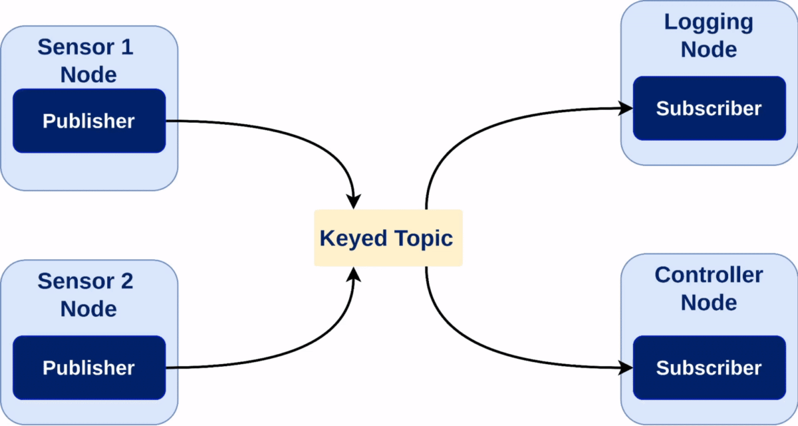

Topic Keys Tutorial
This tutorial aims to demonstrate the use of topic keys by simulating a scenario in which multiple sensors are transmitting their readings to a controller that processes them.
Background
In ROS 2, a Topic is a communication channel used for publishing and subscribing to updates of object states. The value of data associated with a topic changes over time and each of these values are known as data samples. Keyed topics refer to topics where each data sample represent an update of the state of a specific object (known as instance) among all those objects represented in the topic.
Unlike standard topics, where each data sample updates the entire object state with every data sample, keyed topics allow the user to reduce the number of required resources (topics, along with its associated publisher and subscriber) by multiplexing updates of several objects of the same kind into a single resource.
{kind=link}
RMW Support
Keyed topics require RMW implementation support.
rmw_fastrtps |
supported |
rmw_connextdds |
supported |
rmw_cyclonedds |
not supported |
Implementations not supporting the feature will treat keyed topics as standard topics. The implications are explained throughout the tutorial. In addition, endpoints using Cyclone DDS will not even match with Fast DDS or Connext DDS endpoints for this kind of topics.
Creating custom IDL messages
ROS 2 users can define their own custom topic messages in the .msg format.
Then, the ROS 2 message generation stack translates it to the DDS native OMG IDL (Interface Definition Language) message format.
One of the advantages of defining messages in IDL is the ability to use annotations.
Annotations are metadata to the data structure definition that provide additional information about IDL constructs such as modules, interfaces, operations, attributes, and data types.
They are relevant for code generation, documentation, or other purposes.
Annotations in IDL typically follow the @ symbol and can be applied to various IDL constructs.
The @key annotation is used to designate a member as key, which is covered in the following section.
Users can define their own messages in the IDL format directly (following the ROS 2 interface design documentation) or use the msg2idl tool within the rosidl_adapter package.
Creating Keyed Messages
Keyed topics exist when one or more fields in the data structure are annotated as keys. These key fields serve as unique identifiers for topic instances in order to organize and manage the data samples, facilitating efficient access, retrieval, and filtering of data based on the specified key criteria.
The @key annotation designates a field as a key for the given topic type, which can have zero or more key fields and can be applied to structure fields of various types:
Any primitive, such as booleans, integers, characters, strings or sequences.
Other existing or defined messages. If those have defined an inner key member, then those fields will we used as part of the key. Otherwise, the key will be the concatenation of all the fields.
In order to specify multiple keys, separate @key annotations are used.
The following example shows how to define a keyed message using the IDL format:
# KeyedMsgName.idl
module package_name {
module msg {
struct KeyedMsgName {
@key long key;
string data;
};
};
};
Note
Currently, the only supported message format that can be annotated with @key is .idl.
Neither .msg nor .srv files support annotations yet.
Prerequisites
An up-to-date ROS 2 installation and setup. Either installed in local host, or using Docker images.
Preparing the demo package
Lets start by setting up the environment. For this, there are two possible options:
Running a ROS 2 Docker image.
$ docker run -it --rm osrt/ros:rolling-desktop
Running the tutorial on the local host. Please, follow the installation instructions for details on installing ROS 2.
Source the following file to setup the ROS 2 environment:
$ source /opt/ros/rolling/setup.bash
Replace .bash with your shell if you’re not using bash.
Possible values are: setup.bash, setup.sh, setup.zsh.
$ . ~/ros2_install/ros2-osx/setup.bash
$ call C:\dev\ros2\local_setup.bat
Retrieving the sources
In order to retrieve the example demo code, create a new workspace and download the demo package sources as indicated below:
# Create directory structure
$ mkdir -p ~/tutorial_ws/src/demo_keys_cpp
$ mkdir ~/tutorial_ws/src/demo_keys_cpp/msg
$ mkdir ~/tutorial_ws/src/demo_keys_cpp/src
$ mkdir ~/tutorial_ws/src/demo_keys_cpp/launch
$ cd ~/tutorial_ws/src/demo_keys_cpp
# Download demo package source code
$ wget -O CMakeLists.txt https://raw.githubusercontent.com/ros2/ros2_documentation/rolling/source/Tutorials/Advanced/Topic-Keys/resources/Basic/CMakeLists.txt
$ wget -O package.xml https://raw.githubusercontent.com/ros2/ros2_documentation/rolling/source/Tutorials/Advanced/Topic-Keys/resources/Basic/package.xml
$ wget -O README.md https://raw.githubusercontent.com/ros2/ros2_documentation/rolling/source/Tutorials/Advanced/Topic-Keys/resources/Basic/README.md
$ wget -O msg/SensorDataMsg.msg https://raw.githubusercontent.com/ros2/ros2_documentation/rolling/source/Tutorials/Advanced/Topic-Keys/resources/Basic/msg/SensorDataMsg.msg
$ wget -O msg/KeyedSensorDataMsg.msg https://raw.githubusercontent.com/ros2/ros2_documentation/rolling/source/Tutorials/Advanced/Topic-Keys/resources/Basic/msg/KeyedSensorDataMsg.msg
$ wget -O src/multiple_topic_sensor.cpp https://raw.githubusercontent.com/ros2/ros2_documentation/rolling/source/Tutorials/Advanced/Topic-Keys/resources/Basic/src/multiple_topic_sensor.cpp
$ wget -O src/multiple_topic_controller.cpp https://raw.githubusercontent.com/ros2/ros2_documentation/rolling/source/Tutorials/Advanced/Topic-Keys/resources/Basic/src/multiple_topic_controller.cpp
$ wget -O src/single_topic_sensor.cpp https://raw.githubusercontent.com/ros2/ros2_documentation/rolling/source/Tutorials/Advanced/Topic-Keys/resources/Basic/src/single_topic_sensor.cpp
$ wget -O src/single_topic_controller.cpp https://raw.githubusercontent.com/ros2/ros2_documentation/rolling/source/Tutorials/Advanced/Topic-Keys/resources/Basic/src/single_topic_controller.cpp
$ wget -O src/keyed_sensor.cpp https://raw.githubusercontent.com/ros2/ros2_documentation/rolling/source/Tutorials/Advanced/Topic-Keys/resources/Basic/src/keyed_sensor.cpp
$ wget -O src/keyed_controller.cpp https://raw.githubusercontent.com/ros2/ros2_documentation/rolling/source/Tutorials/Advanced/Topic-Keys/resources/Basic/src/keyed_controller.cpp
$ wget -O launch/multiple_topic_sensors_launch.py https://raw.githubusercontent.com/ros2/ros2_documentation/rolling/source/Tutorials/Advanced/Topic-Keys/resources/Basic/launch/multiple_topic_sensors_launch.py
$ wget -O launch/single_topic_sensors_launch.py https://raw.githubusercontent.com/ros2/ros2_documentation/rolling/source/Tutorials/Advanced/Topic-Keys/resources/Basic/launch/single_topic_sensors_launch.py
$ wget -O launch/keyed_sensors_launch.py https://raw.githubusercontent.com/ros2/ros2_documentation/rolling/source/Tutorials/Advanced/Topic-Keys/resources/Basic/launch/keyed_sensors_launch.py
# Create directory structure
$ mkdir -p ~/tutorial_ws/src/demo_keys_cpp
$ mkdir ~/tutorial_ws/src/demo_keys_cpp/msg
$ mkdir ~/tutorial_ws/src/demo_keys_cpp/src
$ mkdir ~/tutorial_ws/src/demo_keys_cpp/launch
$ cd ~/tutorial_ws/src/demo_keys_cpp
# Download demo package source code
$ wget -O CMakeLists.txt https://raw.githubusercontent.com/ros2/ros2_documentation/rolling/source/Tutorials/Advanced/Topic-Keys/resources/Basic/CMakeLists.txt
$ wget -O package.xml https://raw.githubusercontent.com/ros2/ros2_documentation/rolling/source/Tutorials/Advanced/Topic-Keys/resources/Basic/package.xml
$ wget -O README.md https://raw.githubusercontent.com/ros2/ros2_documentation/rolling/source/Tutorials/Advanced/Topic-Keys/resources/Basic/README.md
$ wget -O msg/SensorDataMsg.msg https://raw.githubusercontent.com/ros2/ros2_documentation/rolling/source/Tutorials/Advanced/Topic-Keys/resources/Basic/msg/SensorDataMsg.msg
$ wget -O msg/KeyedSensorDataMsg.msg https://raw.githubusercontent.com/ros2/ros2_documentation/rolling/source/Tutorials/Advanced/Topic-Keys/resources/Basic/msg/KeyedSensorDataMsg.msg
$ wget -O src/multiple_topic_sensor.cpp https://raw.githubusercontent.com/ros2/ros2_documentation/rolling/source/Tutorials/Advanced/Topic-Keys/resources/Basic/src/multiple_topic_sensor.cpp
$ wget -O src/multiple_topic_controller.cpp https://raw.githubusercontent.com/ros2/ros2_documentation/rolling/source/Tutorials/Advanced/Topic-Keys/resources/Basic/src/multiple_topic_controller.cpp
$ wget -O src/single_topic_sensor.cpp https://raw.githubusercontent.com/ros2/ros2_documentation/rolling/source/Tutorials/Advanced/Topic-Keys/resources/Basic/src/single_topic_sensor.cpp
$ wget -O src/single_topic_controller.cpp https://raw.githubusercontent.com/ros2/ros2_documentation/rolling/source/Tutorials/Advanced/Topic-Keys/resources/Basic/src/single_topic_controller.cpp
$ wget -O src/keyed_sensor.cpp https://raw.githubusercontent.com/ros2/ros2_documentation/rolling/source/Tutorials/Advanced/Topic-Keys/resources/Basic/src/keyed_sensor.cpp
$ wget -O src/keyed_controller.cpp https://raw.githubusercontent.com/ros2/ros2_documentation/rolling/source/Tutorials/Advanced/Topic-Keys/resources/Basic/src/keyed_controller.cpp
$ wget -O launch/multiple_topic_sensors_launch.py https://raw.githubusercontent.com/ros2/ros2_documentation/rolling/source/Tutorials/Advanced/Topic-Keys/resources/Basic/launch/multiple_topic_sensors_launch.py
$ wget -O launch/single_topic_sensors_launch.py https://raw.githubusercontent.com/ros2/ros2_documentation/rolling/source/Tutorials/Advanced/Topic-Keys/resources/Basic/launch/single_topic_sensors_launch.py
$ wget -O launch/keyed_sensors_launch.py https://raw.githubusercontent.com/ros2/ros2_documentation/rolling/source/Tutorials/Advanced/Topic-Keys/resources/Basic/launch/keyed_sensors_launch.py
# Create directory structure
$ mkdir C:\tutorial_ws\src\demo_keys_cpp\msg
$ mkdir C:\tutorial_ws\src\demo_keys_cpp\src
$ mkdir C:\tutorial_ws\src\demo_keys_cpp\launch
$ cd C:\tutorial_ws\src\demo_keys_cpp
# Download demo package source code
$ irm -OutFile CMakeLists.txt https://raw.githubusercontent.com/ros2/ros2_documentation/rolling/source/Tutorials/Advanced/Topic-Keys/resources/Basic/CMakeLists.txt
$ irm -OutFile package.xml https://raw.githubusercontent.com/ros2/ros2_documentation/rolling/source/Tutorials/Advanced/Topic-Keys/resources/Basic/package.xml
$ irm -OutFile README.md https://raw.githubusercontent.com/ros2/ros2_documentation/rolling/source/Tutorials/Advanced/Topic-Keys/resources/Basic/README.md
$ irm -OutFile msg/SensorDataMsg.msg https://raw.githubusercontent.com/ros2/ros2_documentation/rolling/source/Tutorials/Advanced/Topic-Keys/resources/Basic/msg/SensorDataMsg.msg
$ irm -OutFile msg/KeyedSensorDataMsg.msg https://raw.githubusercontent.com/ros2/ros2_documentation/rolling/source/Tutorials/Advanced/Topic-Keys/resources/Basic/msg/KeyedSensorDataMsg.msg
$ irm -OutFile src/multiple_topic_sensor.cpp https://raw.githubusercontent.com/ros2/ros2_documentation/rolling/source/Tutorials/Advanced/Topic-Keys/resources/Basic/src/multiple_topic_sensor.cpp
$ irm -OutFile src/multiple_topic_controller.cpp https://raw.githubusercontent.com/ros2/ros2_documentation/rolling/source/Tutorials/Advanced/Topic-Keys/resources/Basic/src/multiple_topic_controller.cpp
$ irm -OutFile src/single_topic_sensor.cpp https://raw.githubusercontent.com/ros2/ros2_documentation/rolling/source/Tutorials/Advanced/Topic-Keys/resources/Basic/src/single_topic_sensor.cpp
$ irm -OutFile src/single_topic_controller.cpp https://raw.githubusercontent.com/ros2/ros2_documentation/rolling/source/Tutorials/Advanced/Topic-Keys/resources/Basic/src/single_topic_controller.cpp
$ irm -OutFile src/keyed_sensor.cpp https://raw.githubusercontent.com/ros2/ros2_documentation/rolling/source/Tutorials/Advanced/Topic-Keys/resources/Basic/src/keyed_sensor.cpp
$ irm -OutFile src/keyed_controller.cpp https://raw.githubusercontent.com/ros2/ros2_documentation/rolling/source/Tutorials/Advanced/Topic-Keys/resources/Basic/src/keyed_controller.cpp
$ irm -OutFile launch/multiple_topic_sensors_launch.py https://raw.githubusercontent.com/ros2/ros2_documentation/rolling/source/Tutorials/Advanced/Topic-Keys/resources/Basic/launch/multiple_topic_sensors_launch.py
$ irm -OutFile launch/single_topic_sensors_launch.py https://raw.githubusercontent.com/ros2/ros2_documentation/rolling/source/Tutorials/Advanced/Topic-Keys/resources/Basic/launch/single_topic_sensors_launch.py
$ irm -OutFile launch/keyed_sensors_launch.py https://raw.githubusercontent.com/ros2/ros2_documentation/rolling/source/Tutorials/Advanced/Topic-Keys/resources/Basic/launch/keyed_sensors_launch.py
Like any other ROS 2 related package, the external dependencies are listed in the package.xml.
The CMakeLists.txt file defines the different targets to be built and the dependencies between them.
Note that it is built in a component manner meaning that the nodes defined in the source files can be also loaded as composable plugins apart from being executed as standalone nodes.
The src/ directory contains the core source files for the different nodes that will be executed in the demo.
The launch files for sensors are also provided in the launch/ directory in which 10 different nodes are launched for each one of the cases that will be later explained.
Finally, the msg/ directory contains two different IDL message definitions, one with key annotations (sensor_id) and another without it.
The resulting directory structure should be:
~/tutorial_ws
├──src
├── demo_keys_cpp
├── CMakeLists.txt
├── README.md
├── launch
│ ├── keyed_sensors_launch.py
│ ├── multiple_topic_sensors_launch.py
│ └── single_topic_sensors_launch.py
├── msg
│ ├── KeyedSensorDataMsg.msg
│ └── SensorDataMsg.msg
├── package.xml
└── src
├── keyed_controller.cpp
├── keyed_sensor.cpp
├── multiple_topic_controller.cpp
├── multiple_topic_sensor.cpp
├── single_topic_controller.cpp
└── single_topic_sensor.cpp
Generating the IDL files
Starting from the provided .msg files, generate the corresponding IDL files using the msg2idl.py script from the rosidl_adapter package.
$ cd ~/tutorial_ws/src/demo_keys_cpp/msg
$ ros2 run rosidl_adapter msg2idl.py SensorDataMsg.msg
$ ros2 run rosidl_adapter msg2idl.py KeyedSensorDataMsg.msg
$ rm SensorDataMsg.msg KeyedSensorDataMsg.msg
$ cd ~/tutorial_ws/src/demo_keys_cpp/msg
$ ros2 run rosidl_adapter msg2idl.py SensorDataMsg.msg
$ ros2 run rosidl_adapter msg2idl.py KeyedSensorDataMsg.msg
$ rm SensorDataMsg.msg KeyedSensorDataMsg.msg
$ cd C:\tutorial_ws\src\demo_keys_cpp\msg
$ ros2 run rosidl_adapter msg2idl.py SensorDataMsg.msg
$ ros2 run rosidl_adapter msg2idl.py KeyedSensorDataMsg.msg
$ del SensorDataMsg.msg KeyedSensorDataMsg.msg
Next, annotate the sensor_id field as @key in the generated KeyedSensorDataMsg.idl.
Its content should look like the following:
/* KeyedSensorDataMsg.idl */
module demo_keys_cpp {
module msg {
struct KeyedSensorDataMsg {
@key int16 sensor_id;
string data;
};
};
};
Building the demo package
Once the environment has been setup and the demo package sources are available, we are ready to build the workspace. Get into the root of the workspace and build it with the following commands:
$ cd ~/tutorial_ws
$ colcon build
$ cd ~/tutorial_ws
$ colcon build
$ cd C:\tutorial_ws
$ colcon build
Running the demo
The tutorial demo consists of a controller node that subscribes to the data published by multiple sensors. Each of the sensors are identified by a sensor_id and publish data to the controller at different rates, in particular, the publication period (in seconds) is the sensor_id times 1. Three different valid approaches are used to address the situation:
In the first one, multiple sensors are publishing data to the controller using different topics for each sensor and the controller subscribing to each one of them.
In the second approach, multiple sensors publish data to the controller using a single standalone topic.
Finally, in the third one, the sensors use a single keyed topic defining a single data instance per unique sensor_id.
In addition, all the publications and subscriptions use the following QoS settings:
History QoS:
KEEP_LAST 1.Reliable communication.
Transient Local durability.
This is set this way to recreate late joining of the controller to the application and evaluate the behavior in each of the three different scenarios. The following diagram depicts the three different scenarios:

Lets start with the first scenario. Run the demo by executing the following commands in separate terminals:
Note
If a docker deployment was preferred, it would be necessary to attach the other two terminals to the running docker container before executing the above commands.
This can be done by running docker exec -it <container_name> /bin/bash.
$ source ~/tutorial_ws/install/setup.bash
$ ros2 launch demo_keys_cpp multiple_topic_sensors_launch.py
$ source ~/tutorial_ws/install/setup.bash
$ ros2 run demo_keys_cpp multiple_topic_controller
$ source ~/tutorial_ws/install/setup.bash
$ ros2 launch demo_keys_cpp multiple_topic_sensors_launch.py
$ source ~/tutorial_ws/install/setup.bash
$ ros2 run demo_keys_cpp multiple_topic_controller
$ call C:\tutorial_ws\install\setup.bat
$ ros2 launch demo_keys_cpp multiple_topic_sensors_launch.py
$ call C:\tutorial_ws\install\setup.bat
$ ros2 run demo_keys_cpp multiple_topic_controller
The resulting output should be similar to the following:

It is important to note that this initial approach is not the most efficient one, as it entails the creation of multiple topics, publishers, and subscriptions. Furthermore, apart from being inefficient, it also makes the application more complex, harder to maintain, and resource demanding. Moreover, as a consequence of creating far more entities than needed, the application incurs in an unnecessary discovery overhead.
Lets go a step further. In this second approach a single topic is used in which all the sensors will publish their data (without using a keyed topic). Run the demo by executing the following commands in separate terminals:
$ source ~/tutorial_ws/install/setup.bash
$ ros2 launch demo_keys_cpp single_topic_sensors_launch.py
$ source ~/tutorial_ws/install/setup.bash
#Wait until sensor[10] publishes the first data (10 secs)
$ ros2 run demo_keys_cpp single_topic_controller
$ source ~/tutorial_ws/install/setup.bash
$ ros2 launch demo_keys_cpp single_topic_sensors_launch.py
$ source ~/tutorial_ws/install/setup.bash
#Wait until sensor[10] publishes the first data (10 secs)
$ ros2 run demo_keys_cpp single_topic_controller
$ call C:\tutorial_ws\install\setup.bat
$ ros2 launch demo_keys_cpp single_topic_sensors_launch.py
$ call C:\tutorial_ws\install\setup.bat
#Wait until sensor[10] publishes the first data (10 secs)
$ ros2 run demo_keys_cpp single_topic_controller
Which leads to an output similar to the one shown below:

This second scenario illustrates that using one single topic, a late-joining controller will not recover the state of all the sensors when it joins the application. This is easily noticeable in the case of sensor with id 10; the controller will not receive the latest data published by this sensor until it publishes a new one. Furthermore, sensors publishing at higher rates (sensors 1~3) can overwrite the data of low rate sensors, causing starvation even in the case of augmenting the history size. These are severe problems that should be avoided.
Now, lets move on to the third approach for addressing the problem. Start, or reuse previous opened terminals and run the following commands:
$ source ~/tutorial_ws/install/setup.bash
$ ros2 launch demo_keys_cpp keyed_sensors_launch.py
$ source ~/tutorial_ws/install/setup.bash
#Wait until sensor[10] publishes the first data (10 secs)
$ ros2 run demo_keys_cpp keyed_controller
$ source ~/tutorial_ws/install/setup.bash
$ ros2 launch demo_keys_cpp keyed_sensors_launch.py
$ source ~/tutorial_ws/install/setup.bash
#Wait until sensor[10] publishes the first data (10 secs)
$ ros2 run demo_keys_cpp keyed_controller
$ call C:\tutorial_ws\install\setup.bat
$ ros2 launch demo_keys_cpp keyed_sensors_launch.py
$ call C:\tutorial_ws\install\setup.bat
#Wait until sensor[10] publishes the first data (10 secs)
$ ros2 run demo_keys_cpp keyed_controller
The resulting output should be similar to the following:
{kind=link}
In this final case, the controller is able to successfully recover the latest state of each sensor (data instance) when it joins the application. In addition, it uses optimum resources (it only requires one topic and one subscription) and guarantees a minimum discovery overhead. Hence, it is by using topic keys when the reception of the latest status of each instance (sensor) is assured. This is because the Quality of Service settings are applied per data instance. For learning how to combine keyed topics with content filter topic, please refer to the Topic Keys Subscription Filtering Tutorial.